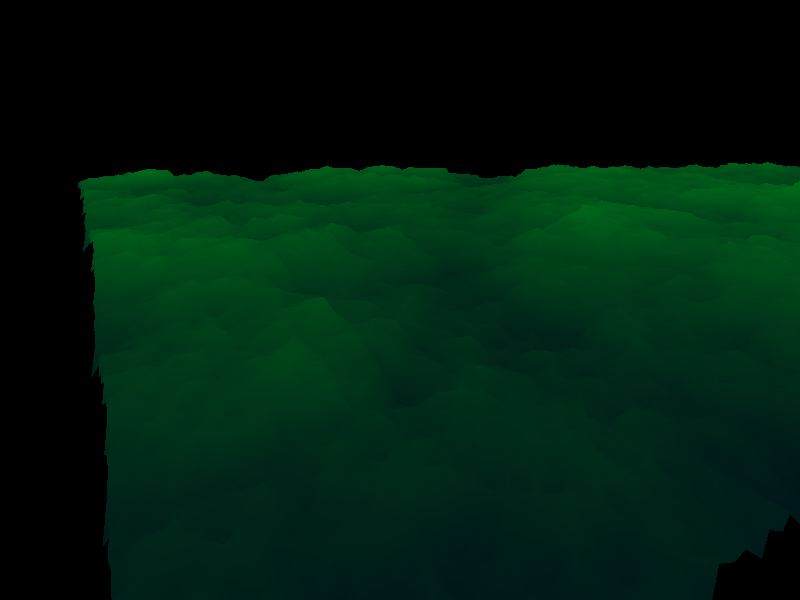

Terrain generation using diamond-square alogrithm and Scipy for Delaunay triangulation
Note
This example is based on vispy.gloo and thus uses GLSL
shading code, which is executed at the GPU and is
defined as multiline strings.
from vispy import gloo
from vispy import app
from vispy.util.transforms import perspective, translate, rotate
import numpy as np
from scipy.spatial import Delaunay
# Arrays for storing generated points and triangles
points = []
triangles = []
height = 0.0
def generate_terrain(r_min, r_max, c_min, c_max, disp):
"""Recursively generates terrain using diamond-square algorithm
and stores the vertices in points
"""
a = points[r_min][c_min][2]
b = points[r_min][c_max][2]
c = points[r_max][c_min][2]
d = points[r_max][c_max][2]
r_mid = (r_min + r_max)/2
c_mid = (c_min + c_max)/2
e = (a+b+c+d)/4 + np.random.uniform(0, disp)
points[r_mid][c_mid][2] = e
points[r_min][c_mid][2] = (a + b + e)/3 + np.random.uniform(0, disp)
points[r_max][c_mid][2] = (c + d + e)/3 + np.random.uniform(0, disp)
points[r_mid][c_min][2] = (a + c + e)/3 + np.random.uniform(0, disp)
points[r_mid][c_max][2] = (b + d + e)/3 + np.random.uniform(0, disp)
new_disp = disp * (2 ** (-0.5))
if (r_mid - r_min > 1 or c_mid - c_min > 1):
generate_terrain(r_min, r_mid, c_min, c_mid, new_disp)
if (r_max - r_mid > 1 or c_mid - c_min > 1):
generate_terrain(r_mid, r_max, c_min, c_mid, new_disp)
if (r_mid - r_min > 1 or c_max - c_mid > 1):
generate_terrain(r_min, r_mid, c_mid, c_max, new_disp)
if (r_max - r_mid > 1 or c_max - c_mid > 1):
generate_terrain(r_mid, r_max, c_mid, c_max, new_disp)
def generate_points(length=3):
"""Generates points via recursive function and generate triangles using
Scipy Delaunay triangulation
Parameters
----------
length : int
(2 ** length + 1 by 2 ** length + 1) number of points is generated
"""
print("Points are being generated...")
global points, triangles, height
size = 2**(length) + 1
points = np.indices((size, size, 1)).T[0].transpose((1, 0, 2))
points = points.astype(np.float32)
generate_terrain(0, size-1, 0, size-1, length)
height = length
points = np.resize(points, (size*size, 3))
points2 = np.delete(points, 2, 1)
tri = Delaunay(points2)
triangles = points[tri.simplices]
triangles = np.vstack(triangles)
print("Points successfully generated.")
VERT_SHADER = """
uniform float u_height;
uniform mat4 u_model;
uniform mat4 u_view;
uniform mat4 u_projection;
attribute vec3 a_position;
varying vec4 v_color;
void main (void) {
gl_Position = u_projection * u_view * u_model * vec4(a_position, 1.0);
v_color = vec4(0.0, a_position[2] * a_position[2] / (u_height * u_height
* u_height), 0.1, 1.0);
}
"""
FRAG_SHADER = """
varying vec4 v_color;
void main()
{
gl_FragColor = v_color;
}
"""
class Canvas(app.Canvas):
def __init__(self):
app.Canvas.__init__(self, keys='interactive')
self.program = gloo.Program(VERT_SHADER, FRAG_SHADER)
# Sets the view to an appropriate position over the terrain
self.default_view = np.array([[0.8, 0.2, -0.48, 0],
[-0.5, 0.3, -0.78, 0],
[-0.01, 0.9, -0.3, 0],
[-4.5, -21.5, -7.4, 1]],
dtype=np.float32)
self.view = self.default_view
self.model = np.eye(4, dtype=np.float32)
self.projection = np.eye(4, dtype=np.float32)
self.translate = [0, 0, 0]
self.rotate = [0, 0, 0]
self.program['u_height'] = height
self.program['u_model'] = self.model
self.program['u_view'] = self.view
self.program['a_position'] = gloo.VertexBuffer(triangles)
self.activate_zoom()
gloo.set_state(clear_color='black', depth_test=True)
self.show()
def on_key_press(self, event):
"""Controls -
a(A) - move left
d(D) - move right
w(W) - move up
s(S) - move down
x/X - rotate about x-axis cw/anti-cw
y/Y - rotate about y-axis cw/anti-cw
z/Z - rotate about z-axis cw/anti-cw
space - reset view
p(P) - print current view
i(I) - zoom in
o(O) - zoom out
"""
self.translate = [0, 0, 0]
self.rotate = [0, 0, 0]
if(event.text == 'p' or event.text == 'P'):
print(self.view)
elif(event.text == 'd' or event.text == 'D'):
self.translate[0] = 0.3
elif(event.text == 'a' or event.text == 'A'):
self.translate[0] = -0.3
elif(event.text == 'w' or event.text == 'W'):
self.translate[1] = 0.3
elif(event.text == 's' or event.text == 'S'):
self.translate[1] = -0.3
elif(event.text == 'o' or event.text == 'O'):
self.translate[2] = 0.3
elif(event.text == 'i' or event.text == 'I'):
self.translate[2] = -0.3
elif(event.text == 'x'):
self.rotate = [1, 0, 0]
elif(event.text == 'X'):
self.rotate = [-1, 0, 0]
elif(event.text == 'y'):
self.rotate = [0, 1, 0]
elif(event.text == 'Y'):
self.rotate = [0, -1, 0]
elif(event.text == 'z'):
self.rotate = [0, 0, 1]
elif(event.text == 'Z'):
self.rotate = [0, 0, -1]
elif(event.text == ' '):
self.view = self.default_view
self.view = self.view.dot(
translate(-np.array(self.translate)).dot(
rotate(self.rotate[0], (1, 0, 0)).dot(
rotate(self.rotate[1], (0, 1, 0)).dot(
rotate(self.rotate[2], (0, 0, 1))))))
self.program['u_view'] = self.view
self.update()
def on_resize(self, event):
self.activate_zoom()
def activate_zoom(self):
gloo.set_viewport(0, 0, *self.physical_size)
self.projection = perspective(60.0, self.size[0] /
float(self.size[1]), 1.0, 100.0)
self.program['u_projection'] = self.projection
def on_draw(self, event):
# Clear
gloo.clear(color=True, depth=True)
# Draw
self.program.draw('triangles')
generate_points(8)
if __name__ == '__main__':
c = Canvas()
app.run()